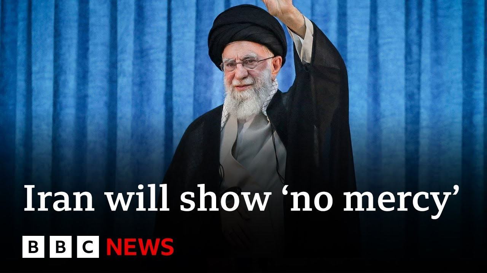

【伊朗最高领袖表示永远不会与以色列妥协 | BBC新闻】
Summary: Iran's Supreme Leader vows no compromise with Israel as tensions escalate, while US President Trump considers direct military involvement and demands Iran's unconditional surrender, amid ongoing strikes and threats between the two nations.
摘要： 伊朗最高领袖誓言绝不与以色列妥协，紧张局势升级；与此同时，美国总统特朗普考虑直接军事介入并要求伊朗无条件投降，两国间持续发生袭击与威胁。

⏱️ Estimated Reading Time: 9 min
📚 六级生词 📚 雅思生词 📚 托福生词 📚 专八生词 📚 SAT生词 📚 考研生词 📚 GRE生词 📚 高考生词
Iran's supreme leader Ayatollah Ali Khamenei says Iran will never compromise as Israel and Iran continue to trade strikes.
伊朗最高领袖阿亚图拉·阿里·哈梅内伊表示，随着以色列和伊朗持续互相袭击，伊朗绝不会妥协。
It comes as US President Donald Trump called for Iran's leaders to unconditionally surrender.
此前，美国总统唐纳德·特朗普要求伊朗领导人无条件投降。
Posting on his social media platform Truth Social, President Trump said the US knows where the Supreme Leader is, but they are not going to kill him.
特朗普在其社交媒体平台Truth Social上发文称，美国知道最高领袖的藏身之处，但不会杀死他。
At least not yet.
至少现在不会。
Our North America correspondent, Jake Quan, has this report.
我们的北美记者杰克·权带来以下报道。
President Donald Trump is considering whether the US should get directly involved in the war against Iran, a question that may define his presidency.
唐纳德·特朗普总统正在考虑美国是否应直接参与对伊朗的战争，这一问题可能决定他的总统任期。
He rushed back to Washington, leaving the G7 meeting a day early.
他提前一天离开G7会议，匆忙返回华盛顿。
The French President, Emmanuel Macron, tried to explain the sudden exit, wishfully suggesting it was to negotiate a ceasefire between Israel and Iran.
法国总统埃马纽埃尔·马克龙试图解释这一突然离场，一厢情愿地暗示是为了促成以色列和伊朗之间的停火。
That's not it, President Trump said.
特朗普总统表示：“不是这样。”
In fact, there is something bigger in the works.
事实上，正在酝酿更大的行动。
We're not looking for a ceasefire.
“我们不是在寻求停火。”
I didn't say I was looking for a ceasefire.
“我没说过我在寻求停火。”
That was Emmanuel.
“那是马克龙说的。”
Nice guy, but he doesn't get it right too often.
“他是个好人，但他经常搞错。”
But, uh, we're not looking.
“但我们不是在寻求……”
We're looking for better than a ceasefire.
“我们寻求的是比停火更好的结果。”
What specifically is better than a ceasefire?
“具体来说，什么比停火更好？”
What are you looking for here?
“你们在这里寻求什么？”
An end.
“终结。”
A real end, not a ceasefire.
“真正的终结，而不是停火。”
An end.
“终结。”
Americans have been helping Israel shoot down Iranian missiles, but resisted joining the attack.
美国人一直在帮助以色列击落伊朗导弹，但拒绝参与攻击。
But in an emergency meeting at the White House yesterday, he discussed striking deeply buried Iranian nuclear sites, like the one at Fordow that Israeli bombs cannot reach.
但在昨天白宫的紧急会议上，他讨论了打击伊朗深埋核设施的计划，比如以色列炸弹无法触及的福尔多核设施。
The meeting also came with a flurry of social media posts, each more aggressive than the last.
会议期间还伴随着一连串社交媒体帖子，每条都比上一条更具攻击性。
In this post, he said, "We know where the so-called supreme leader is hiding, but we are not going to take him out, at least not for now, but we don't want missiles shot at civilians or American soldiers."
在这条帖子中，他说：“我们知道所谓的最高领袖藏在哪里，但我们不会干掉他，至少现在不会，但我们不希望导弹射向平民或美国士兵。”
Next one simply says, "Unconditional surrender."
下一条帖子则简单写道：“无条件投降。”
Iran's supreme leader remained defiant.
伊朗最高领袖仍态度强硬。
Ayatollah Ali Khamenei wrote on social media, "Iran will never compromise with Zionists and we will show the Zionists no mercy."
阿亚图拉·阿里·哈梅内伊在社交媒体上写道：“伊朗永远不会与犹太复国主义者妥协，我们不会对他们手下留情。”
And in another post he wrote, "The battle begins."
在另一条帖子中，他写道：“战斗开始了。”
Americans have been moving its fighter jets to the Middle East as well as moving to Europe dozens of tanker aircrafts used to refuel fighter jets and bombers.
美国一直在向中东调遣战斗机，并向欧洲转移数十架用于为战斗机和轰炸机加油的加油机。
They should have done the deal.
“他们本该达成协议。”
I told them do the deal.
“我告诉过他们，去达成协议。”
So, I don't know.
“所以，我不知道。”
I'm not too much in a mood to negotiate.
“我现在没什么心情谈判。”
It's unclear how much of this is stepping up to fight or the art of the deal.
尚不清楚这是为了升级战斗还是“交易的艺术”。
But President Trump appears to have lost his taste for diplomacy.
但特朗普总统似乎已对外交失去兴趣。
It's quite a turn for a president who promised no new war on his watch.
这对一位承诺任内不发动新战争的总统来说是个巨大转变。
Jay Quan, BBC News, Washington.
BBC新闻，杰伊·权，华盛顿报道。
Well, Muhammad Taha is our correspondent with BBC Arabic and has been following the developments in the region for us.
BBC阿拉伯语频道的穆罕默德·塔哈是我们的记者，一直在为我们跟踪该地区的动态。
This is the day six in this unprecedented war in the Middle East.
这是中东这场前所未有的战争的第六天。
Overnight there were strikes from Iran on Tel Aviv.
昨夜，伊朗对特拉维夫发动了袭击。
We have these two cities—big cities in the Middle East—and Tel Aviv nearly on halt because of these strikes.
中东这两座大城市之一特拉维夫因袭击几乎陷入停滞。
Around 30 missiles from Iran to Israel in 20 minutes.
伊朗在20分钟内向以色列发射了约30枚导弹。
We don't know exactly what have been hit but we heard that at least an automotive factory was hit in the area of Tel Aviv.
我们不清楚具体击中了什么，但听说至少特拉维夫地区的一家汽车工厂被击中。
Israel does not announce exactly what's been hit.
以色列未具体公布被击中的目标。
And in terms of the latest on Tehran itself and the damage there, of course, this time yesterday, we were talking about President Trump posting on social media that everyone in Tehran should evacuate.
关于德黑兰的最新情况和损失，昨天此时我们还在讨论特朗普总统在社交媒体上发文称德黑兰所有人都应撤离。
Yeah, this is shocking as well as you mentioned the evacuation.
是的，你提到的撤离令也很令人震惊。
The Israeli army issued an evacuation order at 2:30 a.m. Tehran time to quarter number 18, a residential area.
以色列军队在德黑兰时间凌晨2:30对第18区（居民区）发布了撤离令。
Two and a half at 2 in the morning.
凌晨两点半。
At 3 the Israeli airplane hit that quarter, which is astonishing to see a warning being issued at that early time of the day.
3点时，以色列飞机袭击了该区，令人惊讶的是警告在凌晨发布。
We understand also that the Israeli aeroplane hit the Imam Hussein University, including a nuclear physics faculty and an aviation engineering faculty as well.
我们还了解到，以色列飞机击中了伊玛目侯赛因大学，包括核物理学院和航空工程学院。
Muhammad Taha there.
穆罕默德·塔哈的报道。
Well, I also talked to Nematullah Ibrahimi who's from the UN University of Melbourne.
我还采访了墨尔本联合国大学的尼玛图拉·易卜拉希米。
I asked for his assessment on what the US might do next.
我请他评估美国下一步可能采取的行动。
You know this sixth day of war which was quite unexpected on many levels.
这场战争的第六天在许多层面上都出人意料。
There are many things we really do not know.
很多事情我们确实不清楚。
The details of the planning for the attack and in terms of how it is unfolding because there are civil restrictions on freedom of information and reporting in Iran.
由于伊朗对信息和报道自由的限制，袭击计划的细节及其进展尚不明确。
There also civil restrictions in Israel.
以色列也有类似的限制。
However, we do know that there are some important aspects of this war.
但我们知道这场战争的一些重要方面。
One that this is I think another incidence of a major power attacking another power—you know another state-to-state conflict—which is not sending a good signal for international peace and security.
其一，我认为这是大国攻击另一大国的又一案例——国家间冲突——这对国际和平与安全不是好信号。
And Israelis are citing the reason is that they are preempting a future development of nuclear weapons by Iran.
以色列人声称这是为了先发制人，阻止伊朗未来开发核武器。
However, this is going against many of the reports of international agencies including IAEA and in fact US intelligence agencies have been reporting that Iran even though they were enriching uranium to significant level but they were not getting any close to developing weapons of mass destruction in nuclear weapons.
但这与国际原子能机构等国际组织的许多报告相悖，事实上美国情报机构一直报告称，尽管伊朗将铀浓缩至较高水平，但并未接近开发核武器等大规模杀伤性武器。
So now I think Iran has very limited options.
因此，我认为伊朗现在的选择非常有限。
There are significant disparities in terms of military capabilities and power between Iran and Israel especially if the United States also join in the confrontation against Iran.
伊朗和以色列在军事能力和实力上存在巨大差距，尤其是如果美国也加入对抗伊朗的行列。
And the Iranian regime has tried to fight back and as you reported the Iranian supreme leader Khamenei has said that they are escalating.
伊朗政权试图反击，正如你所报道的，伊朗最高领袖哈梅内伊表示他们正在升级行动。
But we really don't know much in terms of how far they can go in terms of escalating and fighting back and how far they can sustain that level of confrontation with both Israel and the United States if they also join the.
但我们不清楚他们能在升级和反击的道路上走多远，以及如果美国也加入，他们能否维持与以色列和美国的对抗水平。